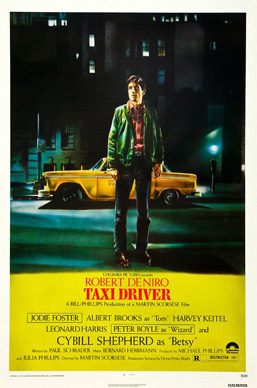

Táxi Driver

- Data de lançamento: 22 de março de 1976 (Brasil)
- Diretor: Martin Scorsese
- Prêmios: Prêmio BAFTA de Cinema: Melhor Atriz Coadjuvante,
- Gêneros: Drama, Crime, Ação, Neo-noir, Noir.
- Indicações: Prêmio BAFTA de Cinema: Melhor Atriz Coadjuvante.
- Roteiro: Paul Schrader
Sinopse:
O motorista de táxi de Nova York Travis Bickle, veterano da Guerra do Vietnã, reflete constantemente sobre a corrupção da vida ao seu redor e sente-se cada vez mais perturbado com a própria solidão e alienação. Apesar de não conseguir fazer contato emocional com ninguém e viver uma vida questionável em busca de diversão, ele se torna obcecado em ajudar uma prostituta de 12 anos que entra em seu táxi para fugir de um cafetão.
Se7en - Os Sete Crimes Capitais
- Data de lançamento: 15 de dezembro de 1995 (Brasil)
- Diretor: David Fincher
- Prêmios: MTV Movie Award: Melhor Filme
- Diretor de Arte: Gary Wissner
- Indicações: MTV Movie Award: Melhor Filme.
- Orçamento:30 milhões USD
Sinopse:
A ponto de se aposentar, o detetive William Somerset pega um último caso, com a ajuda do recém-transferido David Mills. Juntos, descobrem uma série de assassinatos e logo percebem que estão lidando com um assassino que tem como alvo pessoas que ele acredita representar os sete pecados capitais.
Ilha Do Medo

- Data de lançamento: 12 de março de 2010 (Brasil)
- Diretor:Martin Scorsese
- Distribuidores:Paramount Pictures, DreamWorks Pictures
- Prêmios:Teen Choice Award: Ator de Cinema, Horror/Thriller
- Diretor de Arte:Christina Ann Wilson, Max Biscoe, Robert Guerra
- Indicações:Empire Award: Melhor Thriller.
- Orçamento:80 milhões USD, 65 milhões USD
Sinopse:
Nos anos 1950, a fuga de uma assassina leva o detetive Teddy Daniels e seu parceiro a investigarem o seu desaparecimento de um quarto trancado em um hospital psiquiátrico. Lá, uma rebelião se inicia e o agente terá que enfrentar seus próprios medos.